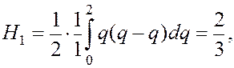
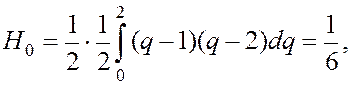
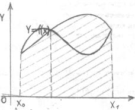
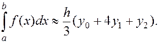
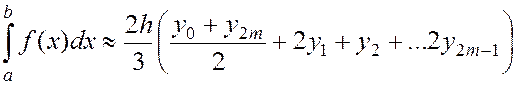

Формула Сімпсона.
Розіб’ємо проміжок інтегрування на два відрізки точками і отримаємо три вузли інтерполювання (формулі (4) n=2). Тоді

(5) перепишеться у вигляді

малюнок 4
 (9)
Отримана формула називається формулою Сімпсона. Геометрично, й у відповідності зі змістом інтерполяційної
функції f(x) параболою яка
проходить через точки (і=0,1,2) (мал. 4).
Розіб’ємо тепер відрізок інтегрування на довільну кількість відрізків n точками (вважаємо, що n=2m – парне число). Застосуємо формулу (9) до кожного із отриманих відрізків розбиття Маємо 
Остання формула називається загальною формулою Сімпсона.